Редизайн сайта Целевого фонда
будущих поколений РС(Я)
2025

В рамках проекта выполнен редизайн официального сайта Целевого фонда будущих поколений РС(Я) с разработкой десктопной и мобильной версии. Основная задача — обновить визуальную систему и повысить удобство восприятия информации, сохранив официальный характер доверительной коммуникации.
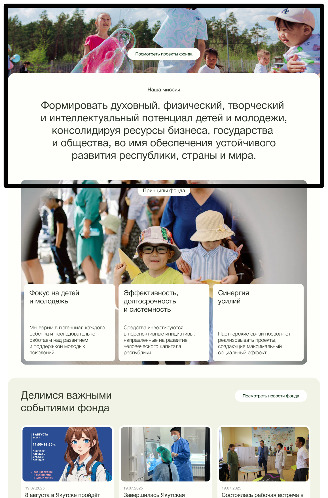
Helvetica Neue
АБВГДЕЁЖЗИЙКЛМНОПРСТУФХЦЧШЩЪЫЬЭЯ
0123456789abcdefghijklmnopqrstuvwxyz
Для проекта выбран шрифт Helvetica Neue, так как он относится к нейтральным гротескам и хорошо подходит для официальных и информационных интерфейсов.
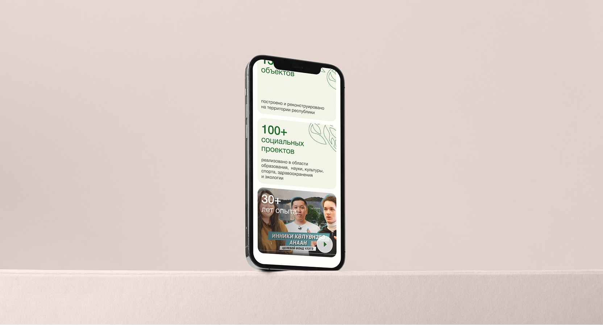
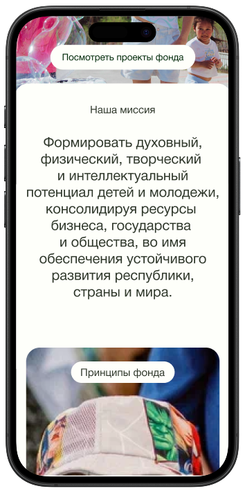
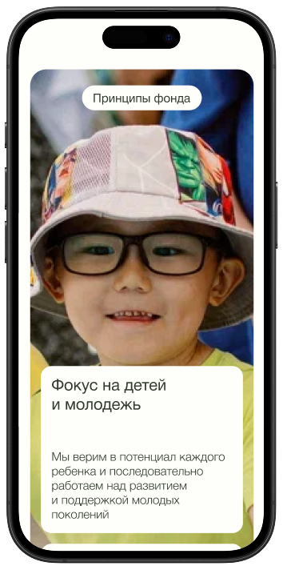
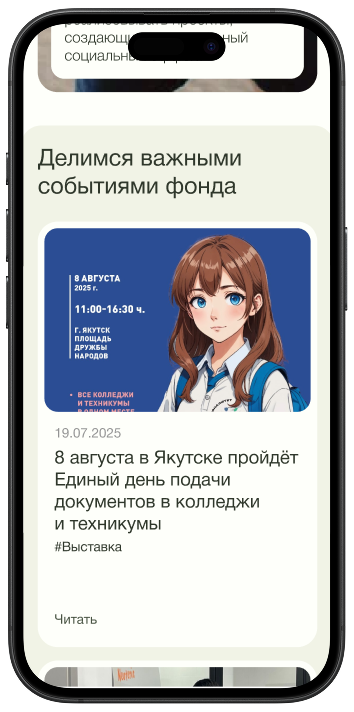
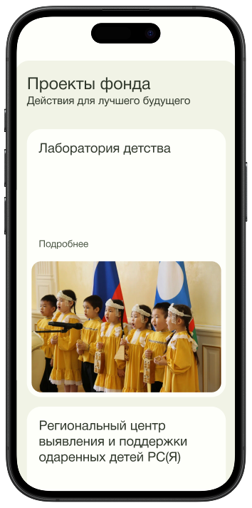
В ходе редизайна было разработано 19 экранов в десктопной и мобильной версии, что позволило выстроить цельную и узнаваемую визуальную систему.
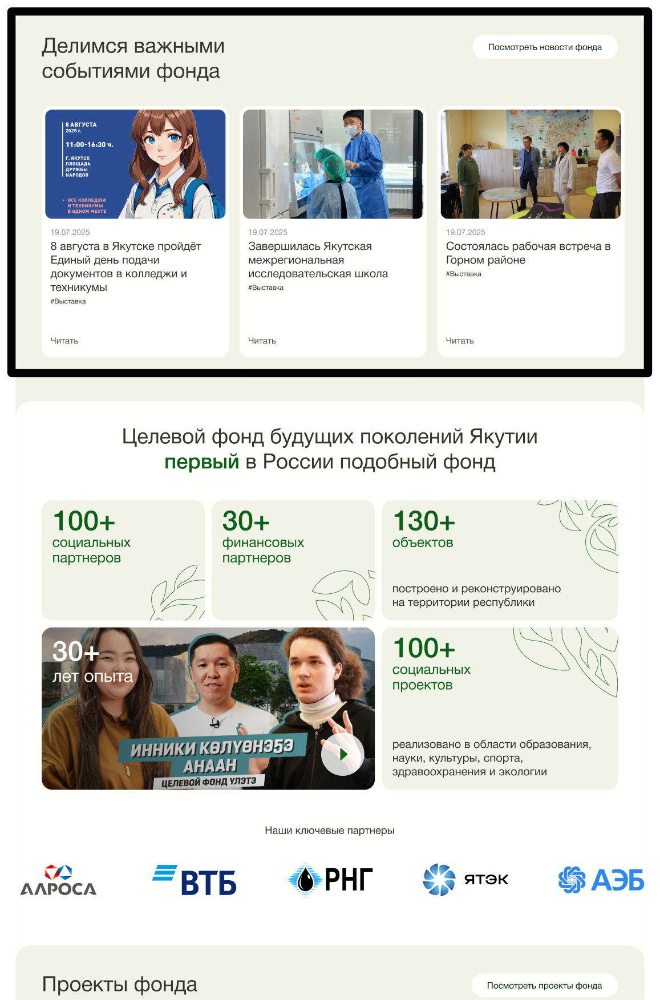
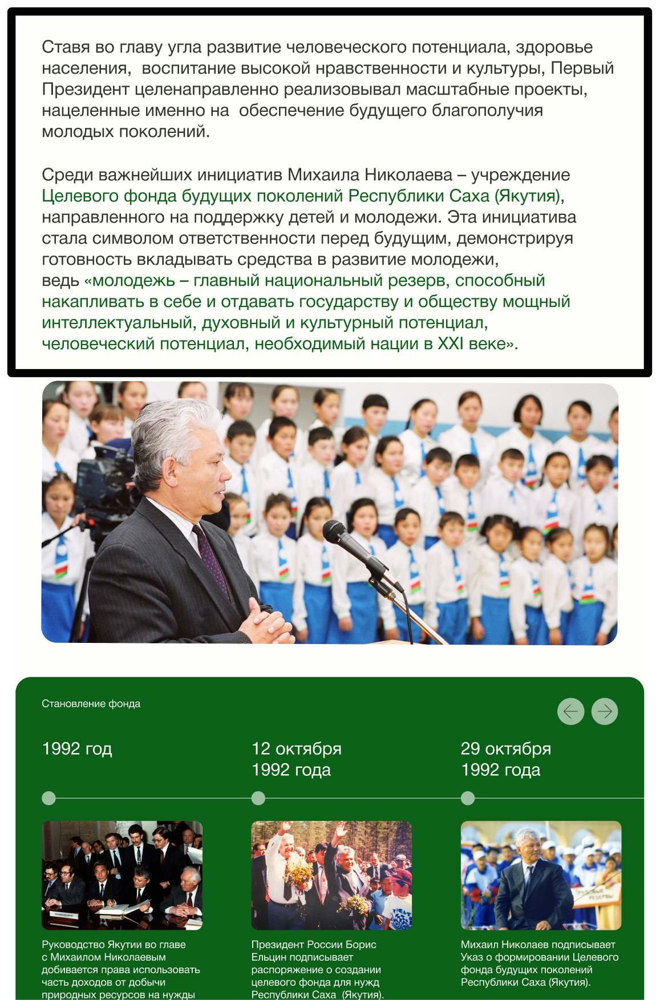
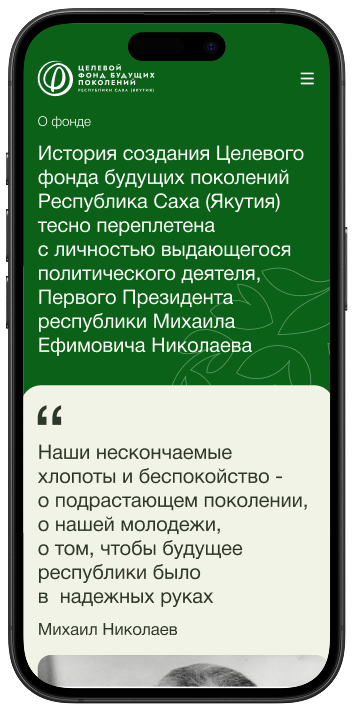
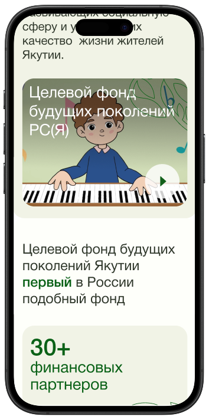
Реализованы страница новостей, закупок, истории фонда, контакты, новости и главная
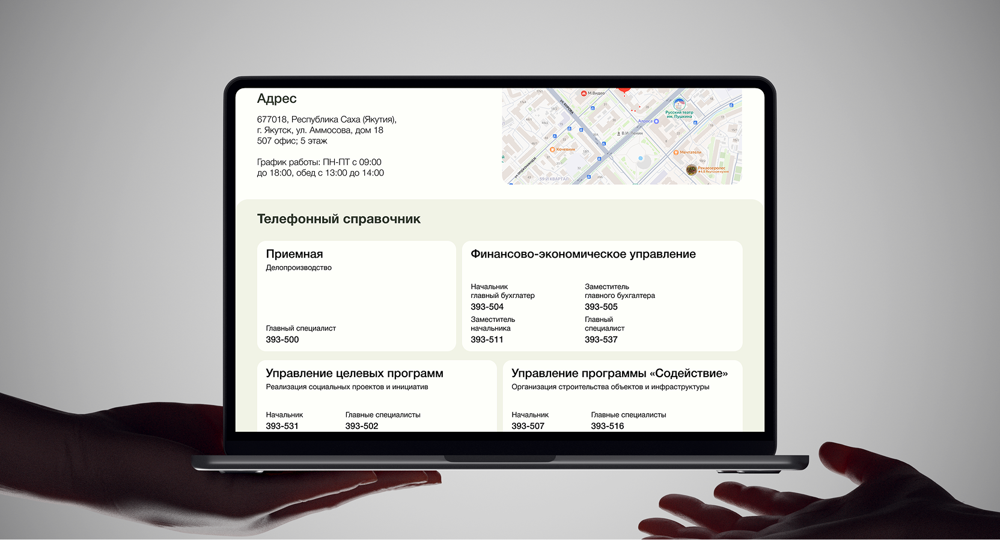
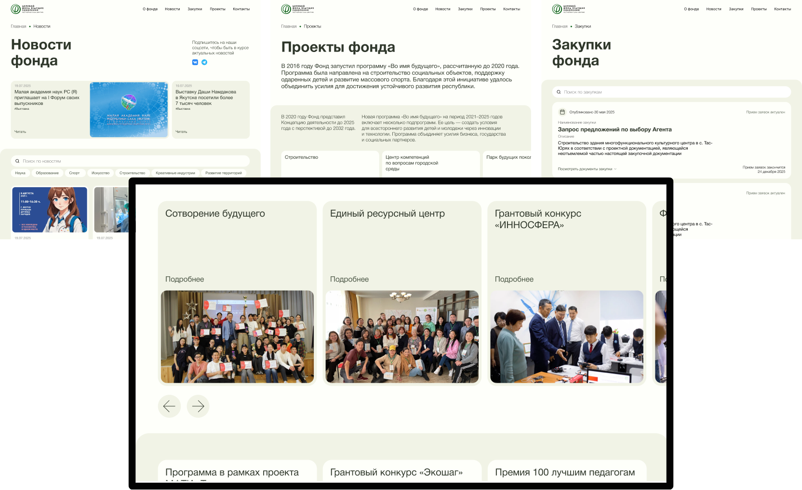